synthé · sampler · autosampleur
Il échantillonne tes synthés tout seul, note par note ou cycle par cycle. Puis il les rejoue comme jamais : un synthé, un sampler, des filtres analogiques, des effets, des modulations. Et quand le son te plaît, tu le rééchantillonnes sans rien couper.
- v@VERSION@
- macOS 11+
- Apple Silicon & Intel
- AU · VST3 · appli
- gratuit · GPL-3

00 · Ce qu'il fait
Synthé
Deux oscillateurs à cycles, nets jusqu'en haut du clavier. Sub, bruit, unisson, modulation de phase. Tu l'ouvres, il joue.
Sampler
Glisse un son sur la fenêtre : il est jouable sur tout le clavier. Étire-le, fige-le, boucle-le, abîme-le.
Weave
Seize sons calés sur la même grille, et une tête qui saute de l'un à l'autre en rythme. Les temps reviennent toujours au même ; entre eux, les accidents heureux.
Orbite
Un porteur et deux satellites qui le modulent en anneau. Fais tourner le satellite 2 : le timbre bouge, la note reste juste.
Cadran
Un cadran de syntonisation sur l'écran : ±96 demi-tons, au cent près. Huit octaves de chaque côté, sans repliement.
Moteur de lecture
Des noyaux sinc de 128 points, une coupure qui suit la vitesse jusque dans la modulation de phase. Transposé, le son reste limpide.
Capture des notes
Ton synthé échantillonné tout seul : chaque note, chaque vélocité, bouclée et accordée. Toi, tu vas te faire un café.
Capture des cycles
Balaie un bouton de ton synthé : chaque position devient un cycle. Ou lance l'écoute, va jouer ta note en tournant un potard : la banque se fait toute seule.
Radio
Une station sur internet ou un récepteur ondes courtes, avec le fading et les craquements de l'air. Samples-la : la prise est découpée en pads.
Drum
Huit pistes et leur séquenceur de 64 pas : une voix faite des cycles du synthé, un son, ou une prise de la radio et ses tranches.
Rééchantillonner
Enregistre ce qui sort des effets et rejoue-le aussitôt, sans la moindre coupure. Ou envoie-le à la boîte à rythmes, découpé sur ses attaques, ou dans WEAVE.
Filtres
Six filtres analogiques modélisés au plus près du circuit, suréchantillonnés, avec drive et réinjection FM.
Effets
Drive, spectre, pitch, chorus, crush, espace, écho. Dans l'ordre que tu veux, sans un clic et sans perdre de volume. Un compresseur en sortie.
Mods et scènes
Quatre modulateurs calés sur le tempo, seize scènes et un fader pour glisser de l'une à l'autre. Et WTF?! pour tout faire basculer.
Partage
Un instrument complet dans un seul fichier. Tu l'envoies, ton pote le glisse dans REPLIK8, c'est joué.
01 · Installer
- 1Ouvre le DMG. Quitte ton DAW.
- 2Double-clic sur Installer REPLIK8. « Personnaliser » = juste l'AU, le VST3 ou l'appli.
- 3macOS refuse ? (Il n'aime pas ce qui n'est pas signé chez Apple.) Ouvre le Terminal : ⌘+Espace, tape Terminal, ⏎. Colle :
Puis ton mot de passe : rien ne s'affiche quand tu le tapes, c'est normal.
@INSTALLER_CMD@
- 1Ouvre le DMG. Quitte ton DAW.
- 2Glisse chaque élément sur son dossier : .component → Components, .vst3 → VST3, .app → Applications.
- 3Ouvre le Terminal : ⌘+Espace, tape Terminal, ⏎. Colle :
Mot de passe (invisible, c'est normal). Elle débloque l'AU et le VST3, puis fait valider l'AU.
@TERMINAL_CMD@
Quand le Terminal dit REPLIK8 est prêt., rouvre ton DAW. Live ne le voit pas ? Réglages › Plug-ins › Réanalyser.
Ensuite, les mises à jour se font depuis le plug-in : bouton Mise à jour en haut quand une version sort.
02 · Brancher
Pour jouer, rien à brancher. Pour capturer, deux câbles : le MIDI vers ton synthé, sa sortie audio vers ta carte son. REPLIK8 pilote le synthé lui-même, quel que soit ton DAW.
Le plus simple : l'assistant. Dans CAPTURE, choisis NOTES ou CYCLES : il s'ouvre et te mène pas à pas. Il reconnaît ton logiciel, lit les vrais noms de tes ports MIDI et de ta carte son, règle REPLIK8 tout seul et te montre, en or, ce qu'il reste à régler dans ta piste. Un synthé logiciel passe par le bus IAC du Mac : s'il est éteint, l'assistant le guette pendant que tu l'allumes. Pour finir, il joue trois notes et écoute ce qui revient : le niveau, une boucle éventuelle, la latence (stable, il cale toutes les notes dessus). Une ligne rouge ? Ce qu'il peut corriger, il le corrige et refait le test (une boucle, un plugin au-dessus de 0 dB, un CC qui ne bouge rien : il en cherche un qui marche) ; le reste, il te donne la marche à suivre pour ton logiciel. Quand il affiche PRÊT, lance la capture. Pour qu'il ne s'ouvre plus tout seul : SETTINGS › ASSISTANT sur OFF. Sa touche reste dans CAPTURE.
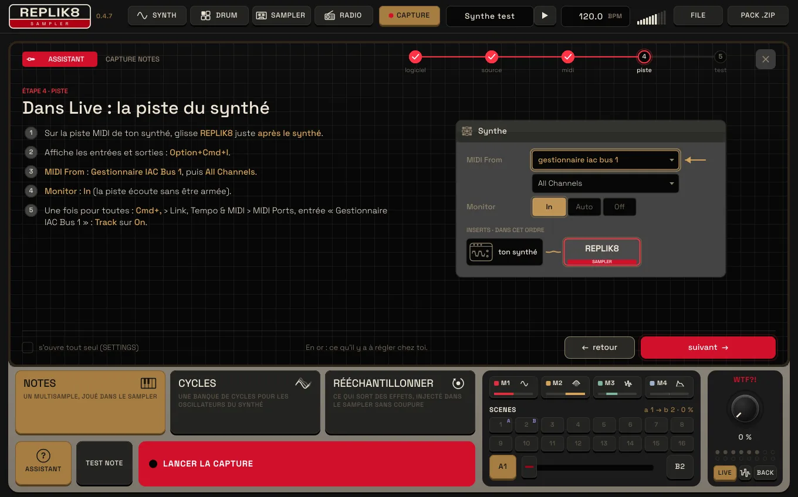
L'étape PISTE : la piste telle que ton logiciel la montre, ce qu'il faut régler en or.
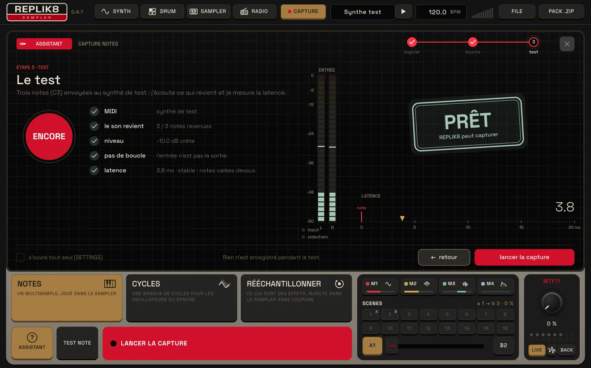
Le test : trois notes revenues, la latence mesurée, PRÊT.
L'appli (le plus simple)
- Fichier › Réglages audio et MIDI : ta carte son et l'entrée du synthé.
- Capture › Source : Son = entrée, Sortie MIDI = le port du synthé.
- Tester une note : tu entends un C3, le niveau d'entrée bouge. C'est prêt.
Logic
- Pour jouer : une piste d'instrument, slot d'instrument › Effets contrôlés par MIDI › REPLIK8.
- Pour capturer : REPLIK8 en effet audio sur la piste qui reçoit le synthé, monitoring d'entrée allumé, puis Lancer la capture.
Bitwig, Reaper, Cubase
- REPLIK8 sur une piste : il joue les notes de la piste et enregistre l'audio qui y arrive.
- Sortie MIDI = le port du synthé, ou DAW si tu routes la sortie MIDI du plug-in.
Ableton Live
- REPLIK8 sur une piste audio (entrée = le synthé, Monitor In) : il capture et sert de multi-effet.
- Pour jouer les instruments : l'appli, ou l'export en dossier de WAV.
Pas de synthé sous la main ? Choisis le synthé test intégré comme source et essaie tout. Astuce : à 96 kHz, les transpositions très graves restent nettes.
03 · Capturer
Appuie sur Capture et choisis ce que tu veux prendre à ton synthé. REPLIK8 s'occupe du reste.
- NOTESUn multisample, sans y passer la nuit. Choisis la plage, jusqu'à 16 vélocités et 8 prises par note. REPLIK8 joue chaque note, coupe les attaques au bon endroit, trouve les boucles, vérifie la justesse et calcule les touches manquantes. À la fin, ton instrument t'attend dans le sampler.
- CYCTa propre banque d'ondes. Une note grave tenue 8 à 64 fois, pendant qu'un CC balaie un bouton du synthé, que la vélocité monte ou que tu tournes toi-même un potard. Chaque prise donne un cycle. La banque part directement dans le synthé : tourne POSITION pour la parcourir. Elle est aussi exportée en wavetable standard de 2048 points.
- LISTENOu rien qu'en écoutant. Lance la capture, va à ton synthé, tiens une note en tournant un bouton : l'enregistrement part dès que le son passe le seuil et s'arrête au silence. REPLIK8 suit la hauteur, garde les cycles là où le timbre bouge (plus nombreux quand il change vite), les aligne entre eux et en fait la banque. Le grain de ta machine analogique, tel quel, dans le synthé.
- RÉÉLe son de tes effets, figé en instrument. Enregistre 1, 2, 4 ou 8 mesures calées sur le tempo, ou en libre. À la fin, la boucle prend le relais sans un trou, les effets se remettent à zéro et le son devient un instrument du sampler. Joue une note et tu reprends la main : transpose-le, boucle-le, repasse-le dans les effets. En insert, ça marche avec n'importe quelle piste de ton DAW.
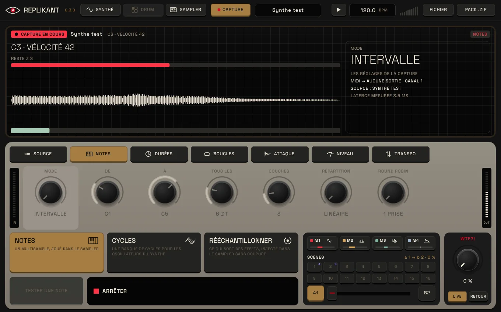
Une capture de notes en cours.
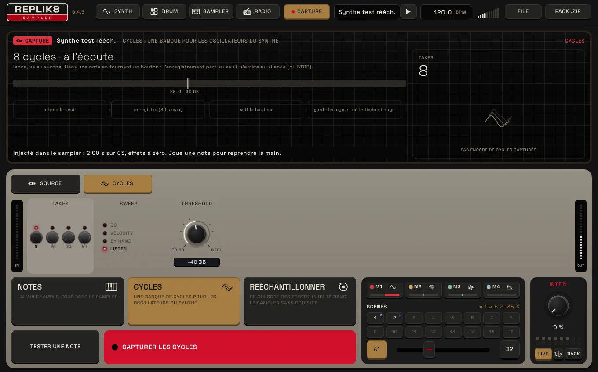
LISTEN : le seuil, posé sur le niveau de l'entrée.

Les mesures se remplissent, puis la boucle prend le relais.
04 · Transposer
Entre deux notes capturées, REPLIK8 calcule les touches manquantes. Et elles sonnent comme ton synthé, pas comme un sample étiré. Trois moteurs au choix :
- HQHQ formants (par défaut) : la hauteur change, le timbre reste. Le filtre de ton synthé ne monte pas avec la note, exactement comme sur la machine.
- HDClassique HD : le varispeed des samplers d'origine, en haute définition, sans repliement.
- TDurée fixe : attaques et decays gardent leur durée, quelle que soit la note.
Mesuré : l'écart moyen des harmoniques avec le vrai synthé jouant la même note. Plus c'est bas, plus c'est fidèle.
| Transposition | Varispeed | HQ formants |
|---|---|---|
| −12 demi-tons | 12,8 dB | 0,8 dB |
| −7 demi-tons | 7,7 dB | 0,5 dB |
| −3 demi-tons | 3,4 dB | 0,2 dB |
| +3 demi-tons | 3,5 dB | 0,4 dB |
| +5 demi-tons | 5,8 dB | 0,6 dB |
| +12 demi-tons | 13,9 dB | 0,2 dB |
05 · Synthé
Le mode par défaut : tu ouvres REPLIK8, tu joues.
- OSCDeux oscillateurs à cycles. 64 formes de base (sinus, dents de scie, carrés, impulsions, sync, formants) ou tes propres cycles capturés, à parcourir en continu. Aucun repliement, même tout en haut du clavier.
- VOICESDe quoi l'épaissir. Modulation de phase de B vers A, sub à l'octave, bruit, unisson jusqu'à 4 voix étalées en stéréo. Poly, mono ou legato, avec glide.
- ORBITEUn troisième oscillateur, à part. Un porteur triangle, scie ou carré, et deux satellites synchronisés qui le multiplient : un anneau qui reste harmonique. Quatre câblages (PARALLEL, CASCADE, FM, LOOP), et la rotation du satellite 2 qui fait tourner le timbre sans bouger la note.
- MIXERTout se retrouve avant le filtre : osc A, osc B, sub, bruit et ORBITE, chacun son fader.
- FLTLe même étage de sortie que le sampler : filtres, enveloppes, drive et effets.
- KEYSTrois claviers, au choix dans SETTINGS : ivoire et ébène, deux rangées de pads rétroéclairés, ou une dalle sombre dont les touches s'allument par en dessous.

ORBITE : son onde sur deux cycles, le porteur et ses satellites, le câblage choisi.
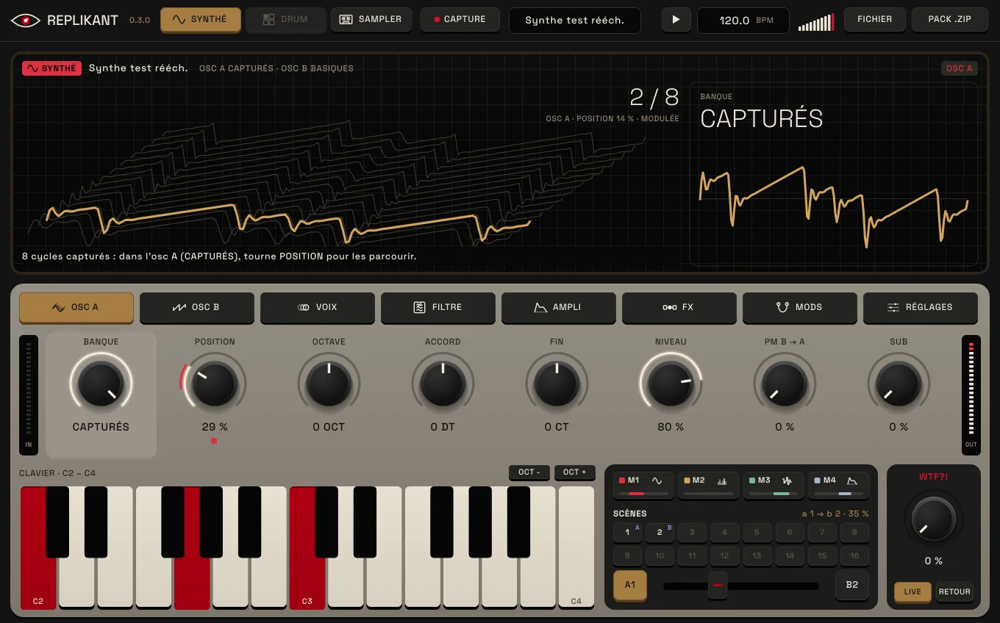
Huit cycles capturés sur le synthé test, du plus sombre au plus brillant.
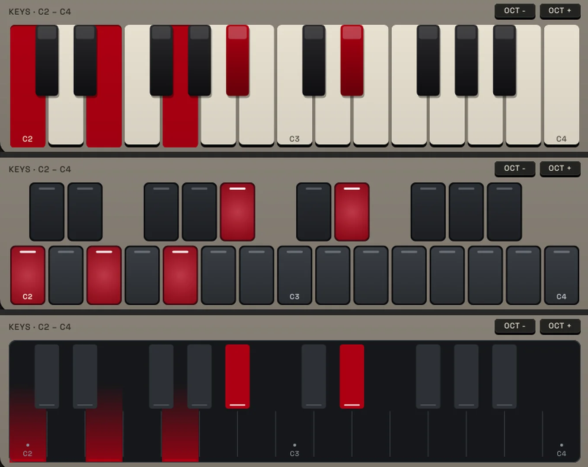
Les trois claviers, le même accord tenu.
06 · Sampler
L'instrument capturé, ou n'importe quel son : glisse un wav, aiff, flac ou mp3 sur la fenêtre, il est aussitôt jouable sur tout le clavier, à la bonne hauteur.
- LECLecture élastique : la vitesse indépendante de la hauteur. Fige, ralentis, inverse, sans perdre le punch des attaques.
- FRZUn instant tenu, sans fin : en STRETCH, le moteur SPECTRAL fige un moment du son (FREEZE) ou le fait avancer très lentement, lisse, en nappe. Quelques dizaines de millisecondes de radio deviennent une nappe de plusieurs minutes. SMEAR règle la longueur de l'instant, TONAL fait ressortir les partiels, HARMONICS fait passer le son par les harmoniques de la note jouée (un bruit devient un accord), SHIMMER ajoute l'octave au-dessus, WIDTH écarte la stéréo.
- BCLBoucles déplaçables, avec un fondu de 0 à 100 % pour des raccords invisibles.
- TUNELe cadran de syntonisation : ±96 demi-tons sur l'écran de la page PITCH, glissé à la souris, au cent près dans sa bande fine. Huit octaves en haut comme en bas, sans un pli.
- GRNDu grain : de la lecture cristalline au repliement assumé, des bits de 32 à 1, la modulation de phase par le son lui-même, sa propre sortie (FEEDBACK), l'entrée ou ORBITE.
- MIXORBITE sous le sample : allume-le, dose-le dans le MIXER, ou fais-lui pousser la tête de lecture.
- WVEWEAVE, jusqu'à seize sons tissés : choisis WEAVE en haut de l'écran du SAMPLER et glisse tes sons (des boucles, des textures, des voix). Chacun est calé sur la grille et lu là où en est le morceau ; une tête passe de l'un à l'autre en rythme. BEAT revient sur chaque temps, BACK sur les temps 2 et 4 ; entre eux, MOVE et son STYLE (au hasard, dans l'ordre, réparti, en question-réponse), puis les accidents : un autre moment du son, des répétitions, l'envers, et une trame qui mute doucement à chaque passage. NEW en tire une autre, BACK revient à la précédente. TAPE fait suivre la hauteur, STRETCH la garde. START : SYNC prend chaque son là où en est le morceau, RESTART le reprend à son début. Chaque réglage se dessine sur l'écran, avec tes sons : tu vois ce qu'il fait à la trame.
- SUBUn grave propre, même tout en bas : un sinus sur la note qui respire avec le sample, ou le sample lui-même relu une ou deux octaves plus bas par le moteur de lecture. Un crossover remplace son grave étiré, et rien ne descend sous 25 Hz.
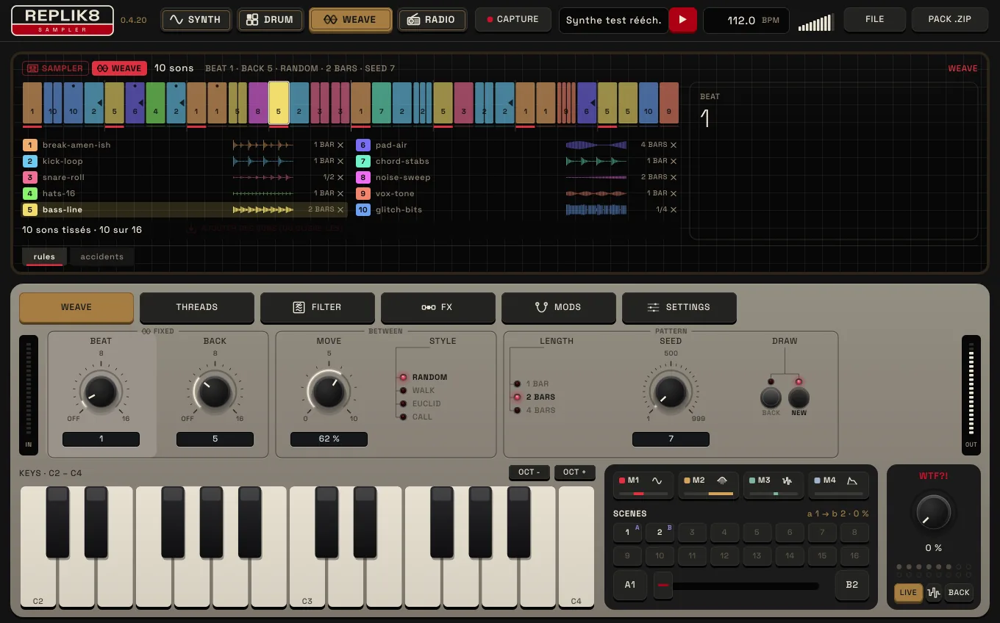
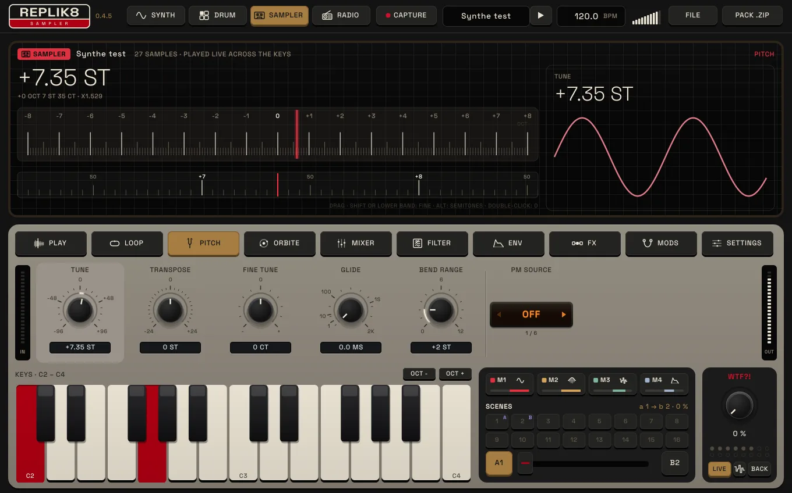
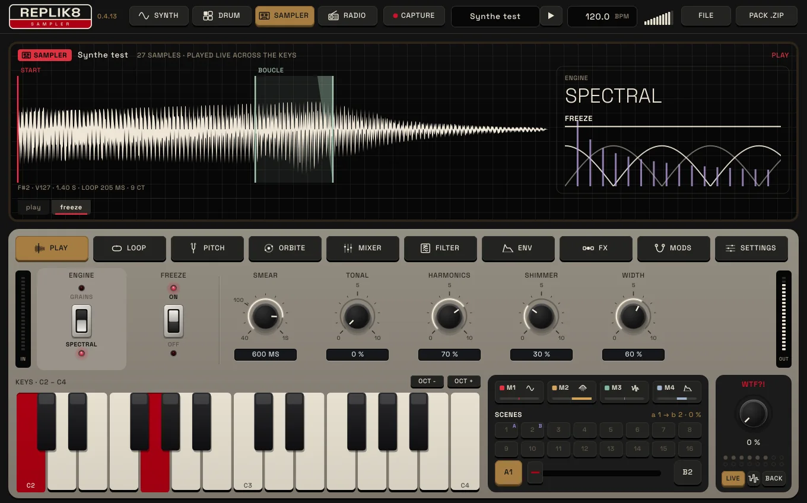

07 · Radio
Un onglet à part : la radio comme un instrument. Accorde un récepteur, écoute, et dès qu'un truc passe, prends-le. Il est aussitôt découpé en pads, ou envoyé au sampler ou au drum.
- TUNEQuatre récepteurs : chacun sur une station internet (l'annuaire libre des stations, par nom, genre ou pays) ou sur un récepteur ondes courtes partagé sur le réseau, à la fréquence que tu veux (un gros potard d'accord qui tourne lentement pour l'accord fin, et accélère quand tu vas vite ; un tour de son cadran pour 10 kHz, et la bande défile sans coupure sous les petits mouvements), en AM, USB, LSB ou CW. SEEK cherche la prochaine station propre, au-dessus ou en dessous, en lisant la bande que montre le récepteur, et s'y accorde. Un S-mètre à aiguille montre la force du signal, et un VU-mètre le niveau du son. Plus de 800 récepteurs dans le monde, les plus libres en premier ; ou colle l'adresse d'un récepteur trouvé sur une carte (http://…:8073, sa fréquence avec). Le flux garde toujours une seconde d'avance, sans jamais dériver.
- LIVECe qui passe maintenant, décalé comme par un récepteur accordé à côté, haché par le squelch entre les mots. Changer de station ne siffle pas : MORPH fige la station quittée, qui s'assombrit et s'efface pendant que la suivante arrive par-dessus. LOOP rejoue sa dernière mesure au tempo, DIG va chercher plus loin en arrière, à chaque tour.
- CUTUn rythme découpé dans toutes tes radios à la fois : chaque pas prend un récepteur au hasard et un moment de ses dernières secondes, calé sur une attaque, ou se tait. Des ratchets, des pas à l'envers, des pas coupés court ; le motif boucle, se renouvelle peu à peu (GRAB), et un clic sur lui en tire un autre.
- AIRL'air entre les deux : la bande étroite du récepteur, le fading des ondes courtes, un orage au loin, le petit haut-parleur poussé.
- GRABLes dernières secondes entendues (de 1 à 30), ou REC jusqu'à STOP. La prise est coupée à ses attaques en 4, 8 ou 16 pads, jouables sur ton clavier à partir de C1.
- MEMDeux minutes en mémoire : la bande de l'écran remonte jusqu'à deux minutes en arrière (la molette zoome et recule). Un clic réécoute à partir de là, un glissé choisit le passage qui devient la prise.
- →Vers le sampler : la prise entière, bouclée, ou un seul pad, en un clic. Elle profite alors de tout : le moteur de lecture, le SUB, ORBITE, les filtres. Vers le drum : la prise sur une piste, une tranche par pas, ou un seul pad.

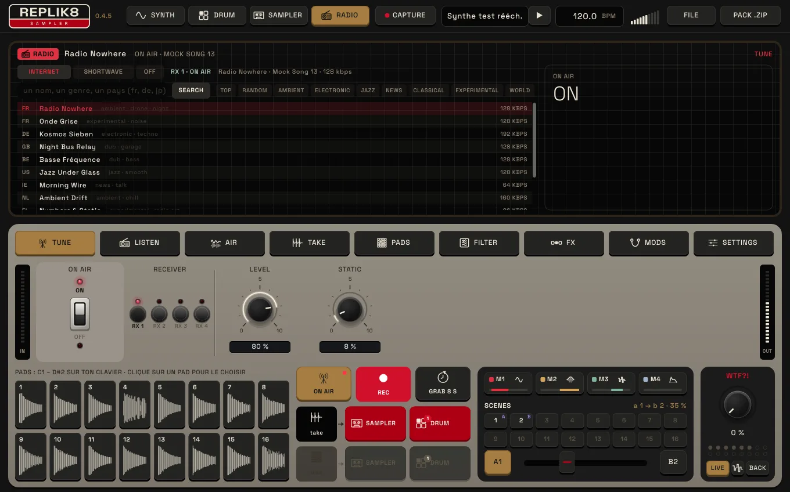
08 · Drum
Huit pistes, un séquenceur de 64 pas, et tout ce qu'il faut pour qu'une boucle ne se répète jamais tout à fait.
- SRCTrois sources par piste : un synthé de batterie, un son glissé sur la fenêtre, ou une prise de la radio, une tranche par pas. Les sons et les prises restent en stéréo (STEREO, coupé : en mono).
- MDLDes percus en table d'ondes : deux oscillateurs, chacun sur sa table (une peau, du métal, des voyelles, du numérique…), qui la balaient après le coup : le son change en tombant. Le second en FM, en MIX ou en RING. MODEL part d'un KICK, d'un SNARE, d'un HAT, d'un CLAP… et l'écran dessine la table et le chemin du balayage.
- PLAYTes sons transformés à chaque coup : un pad de radio lu comme une table d'ondes (WAVE), ou en grains, sa hauteur à part de son temps (GRAINS). STUTTER fait bégayer le coup, BURST le frappe plusieurs fois.
- VOIXDes réglages de batterie : la hauteur qui tombe (SWEEP) pour les grosses caisses et les toms, la modulation de phase pour le métal et les cloches, le clic, le bruit et sa couleur, la décroissance, un filtre par piste avec son enveloppe, un drive, et des groupes de choke pour les charlestons.
- PASChaque pas a sa vie : lève-le et tourne les encodeurs, il garde ses propres réglages. Glisse-le vers le haut pour un ratchet. Ajoute une probabilité, un micro-décalage, un roulement dont les coups se resserrent et s'éteignent.
- SEQUne longueur et une vitesse par piste : une piste de 12 pas contre une de 16, une en ternaire contre les autres. Le swing pour toute la machine.
- PTN128 patterns, de A01 à H16. Le suivant part à la fin de celui qui joue, ou au bout de quelques mesures ; enchaîne-les, copie-les, vide-les.
- EDITRégler un son en l'écoutant : choisis la piste, puis les pages SOURCE, PITCH, AMP, TONE. À l'arrêt, chaque potard tourné rejoue la piste ; en lecture, ce que tu tournes s'entend tout de suite, même sur le coup qui sonne. Et chaque réglage peut recevoir un mod.
- ▶Sur le transport du DAW, ou sur la touche lecture dans l'appli. Les pistes se jouent aussi au clavier, de C1 à G1, et tout passe dans les filtres et les effets.

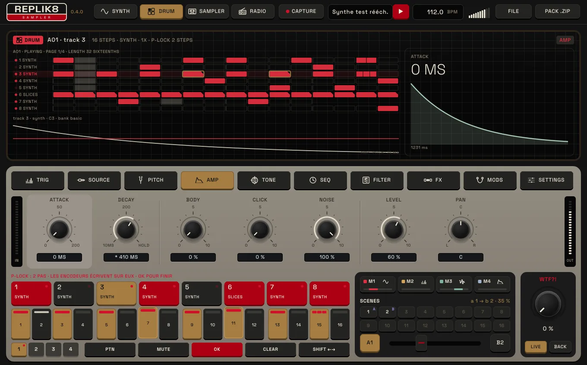
Deux pas levés : la décroissance réglée pour eux seuls.
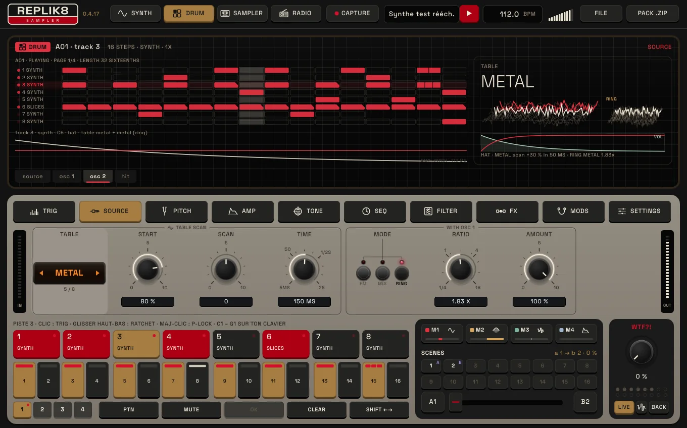

09 · Filtres et effets
- FLTSix filtres analogiques modélisés au plus près du circuit et suréchantillonnés : échelle à transistors, double filtre rugueux, variable d'état, double résonance, CMOS, ampli op saturé. L'écran dessine la courbe et le schéma de chacun.
- CUBEUn filtre qu'on parcourt en trois dimensions : sept sections de résonances et de creux aux huit coins d'un cube, et un point à déplacer dedans, à la souris, à l'enveloppe ou aux mods. Des voyelles qui se changent l'une en l'autre, des formants qui glissent, des peignes, des cloches, des caisses de résonance : dix cubes, et pas une couture entre deux coins.
- DRVDrive : lampe, console ou bande magnétique.
- FXSix effets : spectre (le son redessiné par une nuée d'oscillateurs, analysé en libre, sur la grille, à chaque note ou à chaque attaque ; ses partiels resserrés ou écartés, dans une bande ou autour d'un notch, figés, en fondu de l'ancienne hauteur à la nouvelle, et son feedback jusqu'au drone), pitch (deux voix, cristaux), chorus, crush, espace (une réverbération immense, avec shimmer, son sec et son mouillé chacun leur niveau), écho. SPECTRE montre ses partiels à l'écran, avec leur traînée quand ils glissent. Garde un bloc appuyé une seconde : il sort de son emplacement, les autres se poussent pendant que tu le glisses, et il s'enfonce à sa nouvelle place quand tu le lâches. Un interrupteur sur chaque bloc le coupe ou le remet, sans toucher à son réglage. Et chaque effet garde le volume du son : tu l'ouvres, il s'ajoute, rien ne se creuse.
- ECHOUne bande et quatre têtes de lecture : réparties sur le temps de la bande, chacune de son côté dans la stéréo. Elles lisent dans le sens de la bande, à l'envers, ou une sur deux à l'envers ; elles restent en place, se balancent, glissent le long de la bande (chaque écho monte ou descend, jusqu'à l'octave, et le feedback les fait spiraler) ou sautent ailleurs au rythme que tu choisis. L'usure de la bande : pleurage, saturation, aigus perdus. À l'écran, la bande, ses têtes et l'endroit où tombent les échos.
- LIMITUn limiteur de haute qualité, tout au bout, dans SETTINGS et allumé d'origine : rien ne sort au-dessus du plafond, même entre les échantillons, quoi que fassent les filtres et les effets. Il voit venir les crêtes (1,5 ms, compensées par le DAW) et descend avant elles, sans écraser le son.
- COMPUn compresseur en sortie, dans SETTINGS : un seul bouton pour le seuil, le taux et le rattrapage, de rien du tout jusqu'au limiteur, puis au-delà : les coups passent sous leurs propres queues. Six attaques (les lentes laissent claquer les transitoires), cinq relâchements et AUTO pour les nappes. Il écoute le son lui-même, le sidechain du DAW, l'entrée ou une piste du DRUM. Gate, drive, mélange parallèle, et le volume qui reste à sa place.
- INMulti-effet : en insert sur une piste, REPLIK8 traite n'importe quelle source, et tu peux rééchantillonner le résultat.
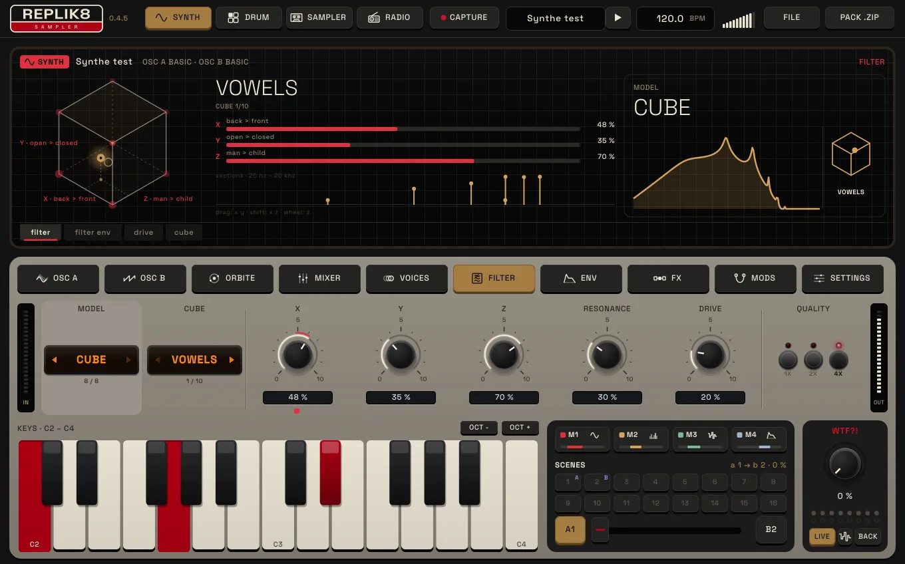
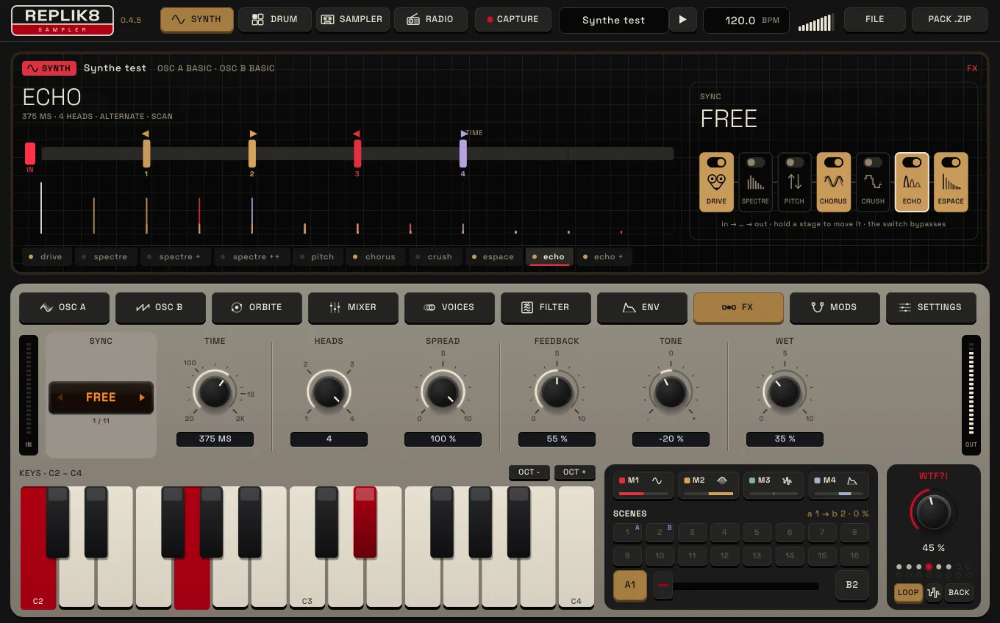
ECHO : quatre têtes, une sur deux à l'envers, qui glissent le long de la bande.
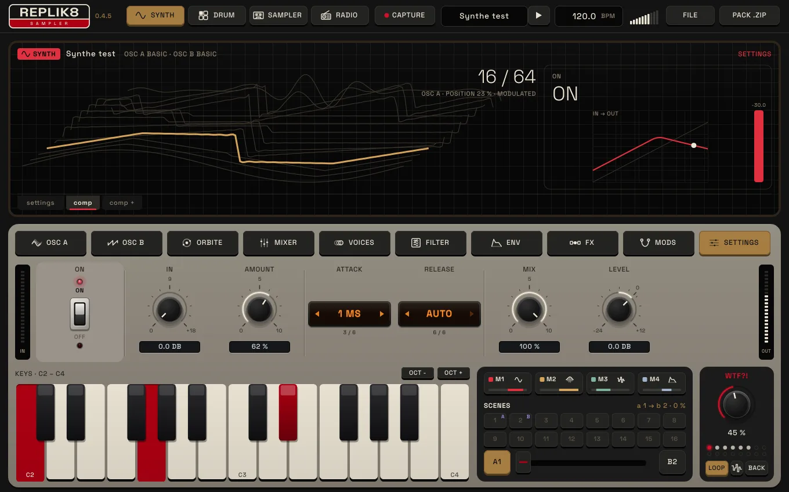
COMP : la courbe redescend passé le limiteur.

10 · Moduler
- MQuatre modulateurs : onde, pas dessinés à la souris, hasard qui revient en boucle, enveloppe, suiveur. Le suiveur écoute l'entrée audio, l'instrument lui-même, le sidechain du DAW, ou une seule piste du DRUM, et l'écran trace ce qu'il envoie.
- 1Assigner, c'est tourner : clique M1 (en bas à droite) ; un bandeau s'affiche sur l'écran et les potards qu'il peut moduler s'entourent de sa couleur. Tourne-en un : la distance devient la profondeur, vers la droite la modulation monte, vers la gauche elle descend. En polarité ±, elle s'étend des deux côtés du réglage. Double-clic sur le potard pour défaire, re-clique M1 pour finir. Les réglages crantés aussi (modèles, formes d'onde, octaves, LENGTH…) : le mod passe d'un cran à l'autre. Et ceux de chaque piste du DRUM.
- MIXLe mixer à l'écran : les faders se tirent directement sur l'écran, et chaque voie a sa coupure d'un clic.
- ABSeize scènes : appuie sur A et tourne les potards, ils sont verrouillés dans la scène A ; pareil avec B. Puis glisse de A à B avec le fader, à la main, en automation ou par un modulateur. Une case, pendant que A ou B est allumé, choisit laquelle des seize scènes il joue.
- WTFWTF?! : les réglages qui comptent tirés au sort à chaque croche, en direct ou en boucle de 2 à 16 tirages (clique les points). Le dé en tire une autre ; BACK pour revenir.
- ⇔À la souris, sur l'écran : glisse la courbe du filtre (coupure et résonance), les enveloppes, la pile de cycles, la bande du spectre, la bande de l'écho, la courbe du compresseur. Double-clic : retour au réglage d'origine.
- CLKHorloge MIDI pour tes machines, au tempo de ton choix ou à celui du DAW.

11 · Exporter, partager
- WAVDossier de WAV : chaque fichier embarque sa note, sa justesse, sa boucle et sa zone, prêt pour n'importe quel sampler, logiciel ou matériel.
- BWMultisample Bitwig : l'instrument complet, zones, vélocités et boucles comprises.
- ZIPPack .zip : l'instrument, ses samples, ses cycles et son réglage dans un seul fichier. Envoie-le par mail ou AirDrop ; de l'autre côté, il suffit de le glisser dans REPLIK8.
Tes instruments vivent dans Musique › REPLIK8, et ton projet s'en souvient.
12 · Tutos
Quelques recettes, pas à pas.
Le grain d'un synthé analogique en banque d'ondes
- Capture › Cycles, Sweep sur LISTEN, Takes sur 32.
- Règle Threshold au-dessus du souffle de ta carte son : le trait blanc, sur le vumètre de l'écran.
- Capturer les cycles, puis va au synthé. Tiens une note grave et tourne lentement un bouton : la coupure, la forme d'onde, la largeur d'impulsion.
- Lâche la note : au bout d'une seconde et demie de silence (ou STOP), la prise est découpée en cycles.
- Mode SYNTH, OSC A, Bank sur CAPTURED : tourne POSITION, ou glisse sur la pile de cycles.
Un multisample, le temps d'un café
- Capture › Notes : l'assistant s'ouvre. Suis-le jusqu'à PRÊT.
- Notes : la plage, une note sur trois, deux ou trois vélocités.
- Lancer la capture. À la fin, l'instrument joue dans le SAMPLER, ses boucles trouvées et ses touches calculées.
Sampler un synthé logiciel dans Live
- Sur la piste MIDI du synthé, glisse REPLIK8 juste après lui.
- Capture › Notes : l'assistant reconnaît Live. Source : un plugin.
- Le bus IAC éteint ? Le bouton de l'assistant ouvre Configuration audio et MIDI : coche « en ligne », il le voit apparaître.
- Dans Live, comme il le dessine : MIDI From sur le bus IAC, Monitor sur In, et dans les réglages MIDI, Track sur On pour l'IAC.
- Test : trois notes, la latence, PRÊT. Lance la capture.
Une nappe qui pompe sur la grosse caisse
- REPLIK8 joue ta nappe. Dans le DAW, envoie la piste de grosse caisse dans son sidechain.
- SETTINGS › comp : ON. Dans comp +, KEY sur SIDECHAIN.
- AMOUNT vers 50 %, ATTACK 0.3 ms, RELEASE 150 ms : la nappe se creuse à chaque coup et remonte.
- Plus loin que 50 % : les coups passent sous la nappe, elle est aspirée entre eux.
- Sans DAW : en mode DRUM, KEY sur DRUM 1, et tout respire autour de la grosse caisse.
Des échos qui montent et qui descendent
- FX : allume ECHO avec son interrupteur, puis son onglet echo : SYNC sur 1/8 ., HEADS 4, FEEDBACK 70 %.
- Onglet echo + : DIRECTION sur ALT, MOTION sur SCAN, SWEEP vers 40 %.
- Joue des notes courtes : une tête sur deux fait monter l'écho, l'autre le fait descendre, et le feedback les fait spiraler.
- WEAR pour user la bande, TONE à gauche pour l'assombrir à chaque passage.
- Garde le bloc ECHO appuyé une seconde et glisse-le après ESPACE : les échos sortent secs de la réverbe.
Moduler vers le bas, ou des deux côtés
- MODS : M1 en FOLLOW, SOURCE sur SELF (l'instrument) ou sur une piste du DRUM.
- POLARITY sur + : clique M1, puis tourne CUTOFF vers la gauche : la route est négative, le filtre se ferme à chaque coup.
- POLARITY sur ± : la modulation s'étend des deux côtés du réglage.
- GAIN pour qu'un son discret aille au bout de la course ; l'écran trace ce que le suiveur envoie.
WTF?! en boucle
- Tourne WTF?! : en LIVE, un nouveau tirage à chaque croche.
- Passe en LOOP et clique les points : une boucle de 2 à 16 tirages, qui revient sur le tempo.
- Le dé : une autre boucle. Celle qui te plaît est gardée avec le son.
- BACK : le son tel qu'il est.
De la radio au drum
- RADIO : accorde un récepteur (TUNE), ON AIR.
- Un truc passe : GRAB prend les dernières secondes, découpées en pads.
- Choisis la piste dans le DRUM, puis sur la ligne take, la touche drum : une tranche par pas. Ou un seul pad, sur la ligne pad.
- Mode DRUM : la piste joue la prise, lève des pas pour changer leur tranche.
Un rythme dans quatre radios
- RADIO › TUNE : accorde deux, trois ou quatre récepteurs sur des stations différentes.
- Page LISTEN : MODE sur CUT, LENGTH sur 1 BAR (seize pas).
- DENSITY pour la part des pas qui jouent, VARY pour les ratchets et les pas à l'envers, DEPTH pour aller chercher plus loin en arrière.
- GRAB : à 0 le motif reste, plus haut il se renouvelle pas à pas. Un clic sur le motif à l'écran : un autre, tout de suite.
- Arme un mod sur LENGTH ou sur le récepteur, en LIVE : il passe d'un cran à l'autre, sans un clic.
Régler la grosse caisse du DRUM
- Mode DRUM, choisis la piste de la grosse caisse (sa touche dans la bande des pistes).
- PITCH : TUNE pour la hauteur, SWEEP et son temps pour la chute du kick.
- AMP : DECAY pour sa longueur, CLICK pour l'attaque, BODY pour le corps.
- À l'arrêt, chaque potard tourné la rejoue ; en lecture, ça s'entend tout de suite.
- Clique M1, tourne DECAY ou CUTOFF : la piste respire avec le mod.
Sculpter à la souris
- Page FILTER : glisse sur la courbe, de côté pour la coupure, de haut en bas pour la résonance.
- Page ENV : à gauche l'attaque, au milieu la décroissance et le maintien, à droite le relâchement.
- Synthé : glisse sur la pile de cycles pour la parcourir. Sampler : sur l'onde, pour le début.
- Maj pour aller plus fin, double-clic pour revenir au réglage d'origine.